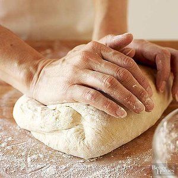
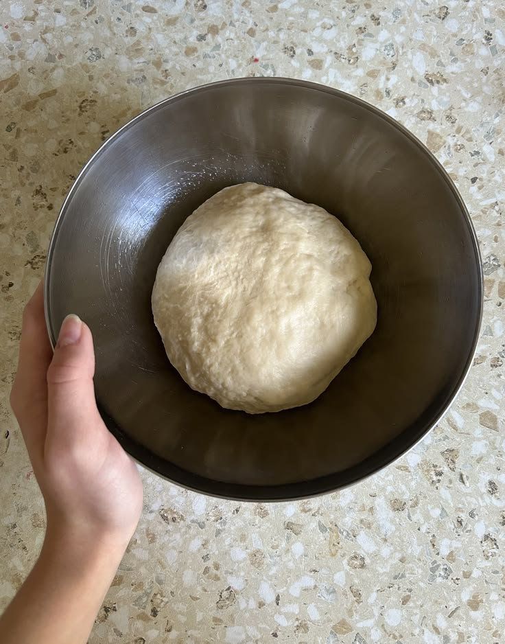

Resep Kue Maryam
Bahan-bahan:
- 250 gr tepung terigu
- 1 butir telur
- 3 sdm margarin, lelehkan
- 100 ml air hangat
- 2 sdm susu bubuk (opsional)
- 1/2 sdt garam
- margarin leleh untuk olesan
- margarin leleh untuk olesan

Langkah-langkah
1. Campur semua bahan roti jadi satu

2. Uleni sampai kalis (aku pakai tangan), jangan ulek jika adonan lengket ya, lumuri tangan sedikit dg tepung (tapi jangan menambahkan tepung) uleni terus sampai adonan kalis.

3. Kalau adonan terasa tidak sekalis adonan roti ya, kira-kira seperti ini sudah cukup.
